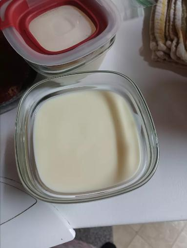

Custard Recipe

Description
This custard recipe is a combination of a few different recipes.
It's not too rich or too sweet.
Can be served warm immediately or cold.
Ingredients
- 4 cups whole milk
- 1 tablespoon vanilla extract
- 1 teaspoon butter
- 4 eggs
- 1/2 cup white sugar
- 3 tablespoons cornstarch
Steps
- Place milk, vanilla extract, and butter in a saucepan.
Cook and stir over medium heat until simmering;
remove from heat before it comes to a boil.
- Whisk eggs, sugar, and cornstarch together in a bowl until sugar dissolves.
- Set the saucepan back over low heat.
Pour in egg mixture slowly, whisking constantly,
until custard thickens enough to coat the bottom of a spoon,
5 to 10 minutes.
- Serve warm or transfer custard into a large bowl, cover,
and allow to cool before chilling.